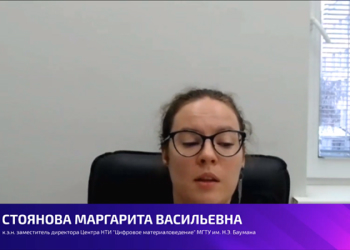

9-10 декабря 2021 года в онлайн-формате прошла международная конференция «Искусственный интеллект в образовании» («L'intelligence artificielle dans l'education»), организованная при поддержке Министерства просвещения Российской Федерации и объединившая свыше 350 участников. Российские педагоги и их коллеги из Франции (г. Тулуза), Бельгии, Польши, Болгарии и других стран ближнего и дальнего зарубежья обсудили актуальные тенденции в сфере цифровых технологий и их влияние на образование, а также обменялись опытом внедрения искусственного интеллекта в процесс обучения.
Организация мероприятия осуществлялась при поддержке Министерства просвещения России и в рамках мероприятий, направленных на полноценное функционирование и развитие русского языка, ведомственной целевой программы «Научно-методическое, методическое и кадровое обеспечение обучения русскому языку и языкам народов Российской Федерации». Конференция состоялась в рамках Года науки и технологий в России, программа которого объединила уже более 80 федеральных событий, в том числе просветительских мероприятий с участием известных ученых, образовательные проекты и т.д.
Цель конференции – обмен опытом реализации национальных стратегий России и Франции по развитию и внедрению в социально-экономическую сферу искусственного интеллекта. Обсуждение тематических вопрос проводилась среди соотечественников, проживающих за рубежом на русском языке, что служило популяризации достижений российской науки и русского языка.
Среди задач мероприятия – активизация широкого доступа к отечественным научным исследованиям, научным открытиям в сфере искусственного интеллекта, а также поддержка русского языка как средства взаимодействия стран мира, расширение присутствия российского образования за рубежом и др.
Участниками мероприятия стали руководители и педагоги образовательных организаций из числа соотечественников, проживающих за рубежом, представителей органов управления образованием зарубежных стран и представителей бизнеса, специализирующегося на разработках в сфере искусственного интеллекта, студентов и школьников. В ходе двухдневной конференции участники рассмотрели актуальные вопросы использования информационных технологий в образовательной системе, в том числе в сфере обучения русскому языку как иностранному.
В качестве спикеров и модераторов круглых столов выступили авторитетные эксперты научных и образовательных организаций, а также эксперты передовых отечественных и мировых компаний в области развития искусственного интеллекта. В частности, в рамках конференции с докладом выступят: Надежда Сурова, руководитель Центра компетенций «Искусственный интеллект» НТИ, управляющий директор Центра компетенций «Кадры для цифровой экономики» Университета 20.35 НТИ, член Экспертного совета Государственной Думы по цифровой экономике и блокчейн-технологиям, член Совета Федерации по цифровой экономике; Михаил Городничев, канд. техн. наук, доцент, декан факультета «Информационные технологии» МТУСИ, Андрей Комиссаров, директор Университета 2035 НТИ по направлению «Развитие на основе данных», Ольга Плотникова, магистр лингвистики, старший преподаватель в НИУ ВШЭ (Москва), Маргарита Стоянова, к.э.н. заместитель директора Центра НТИ «Цифровое материаловедение» МГТУ им. Н. Э. Баумана, Андрей Очеретный, исполнительный директор блока HR Сбербанка, Наталья Лукьянова, организатор просветительских мероприятий, совместных культурных проектов между Россией и Францией, методист Страсбургского университета и другие спикеры и эксперты.
Об искусственном интеллекте в цифровой диагностике soft skills рассказал Андрей Комиссаров, директор Университета 2035 НТИ по направлению «Развитие на основе данных». Темой доклада Глеба Власова, руководителя сектора виртуальной и дополненной реальности, научного сотрудника Московского технического университета связи и информатики, стали приложения виртуальной и дополненной реальности в современном образовании. Большое внимание участников конференции также привлек доклад «Пространство для новых возможностей преподавания иностранных языков. На примере учебника РКИ «Привет, Россия!», представленный Ольгой Плотниковой, магистром лингвистики, старшим преподавателем в НИУ ВШЭ (Москва), создателем сообщества для преподавателей РКИ и портала «RKI.today», автором учебников «Привет, Россия», и «Русский язык сегодня», автором и разработчиком первого в РКИ мобильного приложения «Learn&Go».
В ходе второго дня онлайн-конференции состоялась серия круглых столов, посвященная различным аспектам внедрения искусственного интеллекта в образовательные процессы. В частности, в рамках круглого стола «Цифровой след в образовании, образовательный дата-инжиниринг и новая цифровая реальность», проведенного Андреем Комиссаровым, участники рассмотрели вопросы разработки коллективного человеко-машинного интеллекта. Надежда Сурова, руководитель Центра компетенций «Искусственный интеллект» НТИ, управляющий директор Центра компетенций «Кадры для цифровой экономики» Университета 20.35 НТИ, член Экспертного совета Государственной Думы по цифровой экономике и блокчейн-технологиям, член Совета Федерации по цифровой экономике, провела круглый стол, посвященный актуальным вопросам применения технологий искусственного интеллекта в образовании.
Кроме того, руководитель по работе с регионами Обрсоюза, эксперт Национального союза педагогов Наталья Шадрина выступила модератором круглого стола по теме «Когда проще – лучше. Как ИИ помогает оптимизировать процессы и сосредоточиться на главном? Искусственный интеллект как необходимое условие построения сквозных образовательных траектории».
Конференция стала эффективной международной площадкой, объединившей педагогов и экспертов в сфере искусственного интеллекта из разных стран. Обмен передовыми практиками внедрения искусственного интеллекта, а также технологиями решения задач, связанными с применением искусственного интеллекта в области образования, проведенный в формате круглых столов, позволил подробно ознакомиться с успешным российским и зарубежным опытом в данной сфере. Как отмечали участники, проведение мероприятия будет способствовать развитию активного обмена разработками в области использования искусственного интеллекта для образовательных целей, что особенно актуально в период высокой востребованности дистанционных технологий обучения.
С материалами конференции можно ознакомиться на официальном сайте ai2021.education. На портале также представлены записи выступлений участников мероприятия.